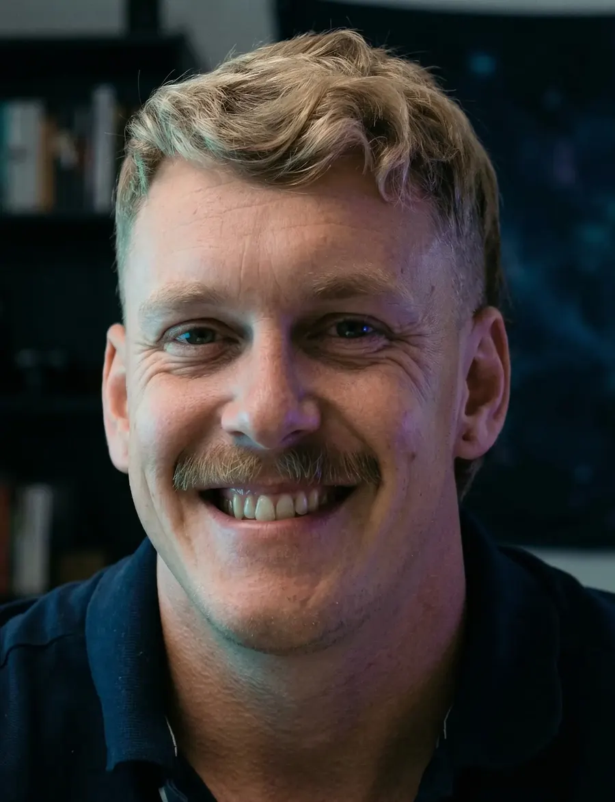

epaRadar
Friends on a live map. Only friends see where you are.
- Role
- Degree project, built alone
- Stack
- React Native, Expo, Supabase, Postgres, pgTAP
- GitHub



Product engineer · TypeScript, React and C#/.NET
I build and run things myself, from data model to server.
Three things I built and run
Friends on a live map. Only friends see where you are.
We started this site to collect signatures for our preschool.


Two landing pages for EDGE Associates, on one code base.
My own tools, in daily use
The same work, as a street at night
Every project above is a painting on one street. About a minute of scrolling, best on a laptop.
 Walk through it →
Walk through it →